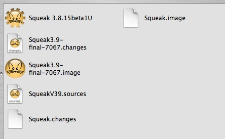

After the image writes itself out, choose "Quit, do not save" from the File menu.
You should now find the following files in the new deployment folder.
Throw away most of the files. We only need the VM and the new image file.
Rename the VM file to "Laser Game". Then, with the file selected, Control-Click to bring up the context menu. Choose "Show Package Contents".
A new folder will open up on the Laser Game application which shows the internal contents of that application on OS X.